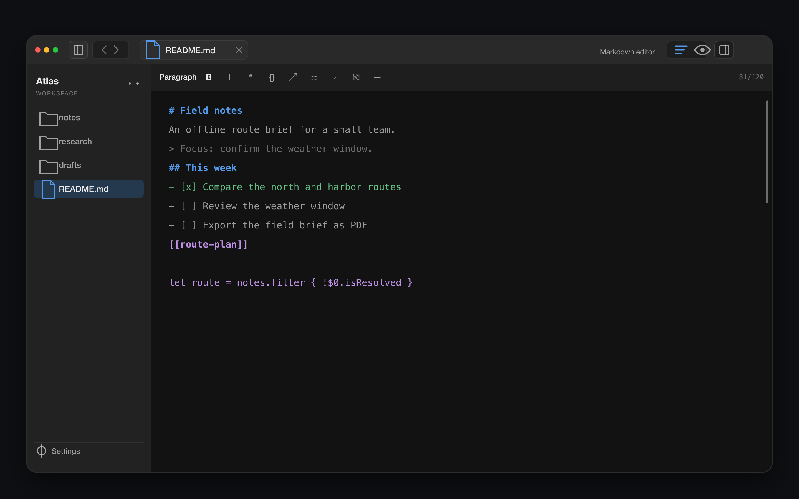

Native workspace for macOS
Markdown, PDFs, and a terminal. One window.
Open a folder and start. Monknot keeps writing, rendered previews, searchable PDFs, and shell sessions beside the files already on your disk.
Download for macOS
macOS 14+ · Apple silicon and Intel

- Synced Markdown and HTML previews
- Search text and searchable PDFs
- Highlights, underlines, and drawing
- Multiple terminal sessions
- Quick Open, tabs, and outlines
- Markdown export to PDF
- Daily notes and wikilinks
- Scoped replace with batch undo
Theme explorer
50+ themes, all the way through.
A preset changes the editor, sidebar, syntax, selection, and terminal together. Start with a family below, then step through the full catalog.
Featured families
Harbor, Brasspants, Codechimp, Greaseball, Sockpuppet, Forge, Parchment, and Monolith.
Selected preset
Harbor
Harbor · Dark